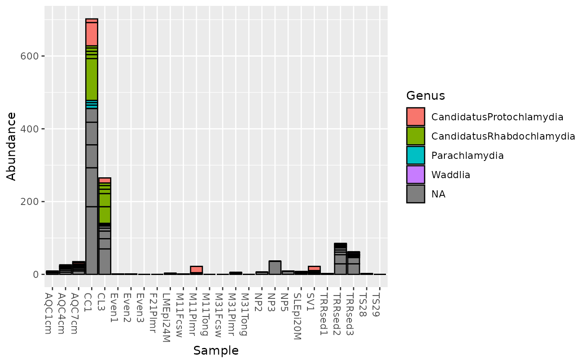
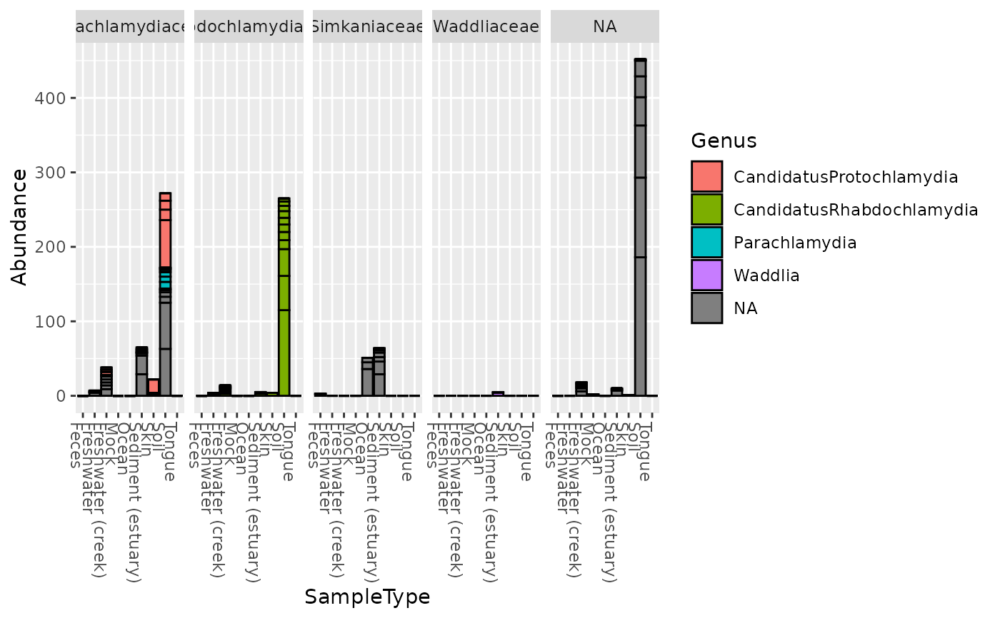

There are many useful examples of phyloseq barplot graphics in the
phyloseq online
tutorials. This function wraps ggplot2 plotting, and returns a
ggplot2 graphic object that can be saved or further modified with
additional layers, options, etc. The main purpose of this function is to
quickly and easily create informative summary graphics of the differences in
taxa abundance between samples in an experiment.
plot_bar(physeq, x="Sample", y="Abundance", fill=NULL, title=NULL, facet_grid=NULL)
Arguments
| physeq | (Required). An |
|---|---|
| x | (Optional). Optional, but recommended, especially if your data
is comprised of many samples. A character string.
The variable in the melted-data that should be mapped to the x-axis.
See |
| y | (Optional). A character string.
The variable in the melted-data that should be mapped to the y-axis.
Typically this will be |
| fill | (Optional). A character string. Indicates which sample variable
should be used to map to the fill color of the bars.
The default is |
| title | (Optional). Default |
| facet_grid | (Optional). A formula object.
It should describe the faceting you want in exactly the same way as for
|
Value
A ggplot2 graphic object -- rendered in the
graphical device as the default
print/show method.
See also
Examples
plot_bar(gp.ch, fill="Genus")plot_bar(gp.ch, x="SampleType", fill="Genus")plot_bar(gp.ch, "SampleType", fill="Genus", facet_grid=~Family)# See additional examples in the plot_bar online tutorial. Link above.